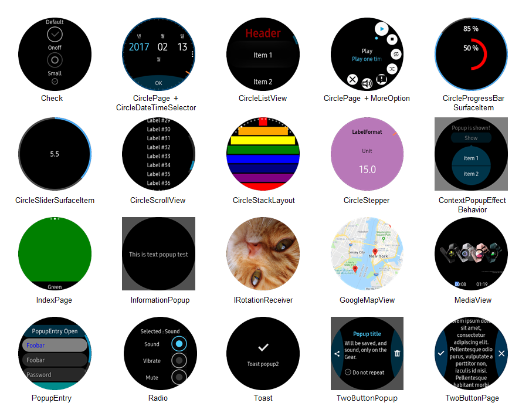

Tizen CircularUI
The Tizen CircularUI is a set of helpful extensions to the Xamarin Forms framework on the Samsung Gear device. The binaries are available via NuGet (package name CircularUI) with the source available here.
Controls
| Name | Description |
|---|---|
| Check | A subclass of Xamarin.Forms.Switch control with some different styles. |
| CircleDateTimeSelector | A control to select date or time fits in the circular screen. |
| CircleListView | A subclass of Xamarin.Forms.ListView control fits in the circular screen. |
| CirclePage | A subclass of Xamarin.Forms.Page that can show Circular ProgressBar and Circular Slider and the button on the bottom of the screen. it can also show MenuItems on the circular menu.(MoreOption) |
| CircleProgressBarSurfaceItem | A control fits in the circular screen. it can be shown in CirclePage only. |
| CircleSliderSurfaceItem | A Slider control that responds to the bezel action and fits in the circular screen. |
| CircleScrollView | A subclass of Xamarin.Forms.ScrollView that can be scrolled by the bezel action. |
| CircleStackLayout | A container to layout children linear in the circular area. |
| CircleStepper | A control to select a number of steps fits in the circular screen. |
| CircleSurfaceEffectBehavior | The CircleSurfaceEffectBehavior is an effect which allows you to insert views that require CircleSurface. |
| ConfirmationPopup | A popup has two button in left and right side of the circular screen. |
| ConfirmPopupEffect | The effect to show a small popup has one or two buttons sticky with any control. |
| ContextPopup | A context popup fits in the circular screen. |
| IndexPage | A subclass of multiple Pages that can slide child page horizontal and has dots on top of the screen for the number of child pages. |
| InformationPopup | A popup has a control to show progress and one button in the bottom side of the circular screen. |
| IRotaryEventReceiver | A event receiver for using the bezel action. |
| Radio | A radio control fits in the circular screen. |
| PopupEntry | The PopupEntry is a class that extends Xamarin.Forms.Entry. It makes a new layer when editing text on the entry. |
| Toast | A popup for simple feedback. |
| TwoButtonPage | A subclass of Xamarin.Forms.Page has two buttons on the left and right side of the circular screen. |
